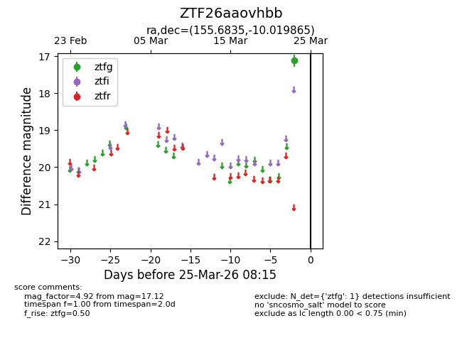
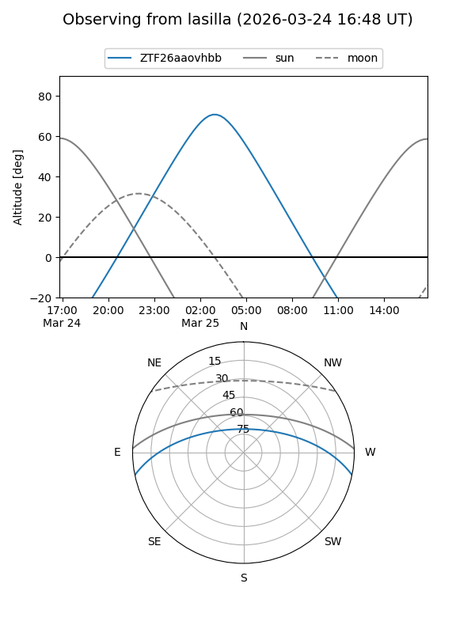
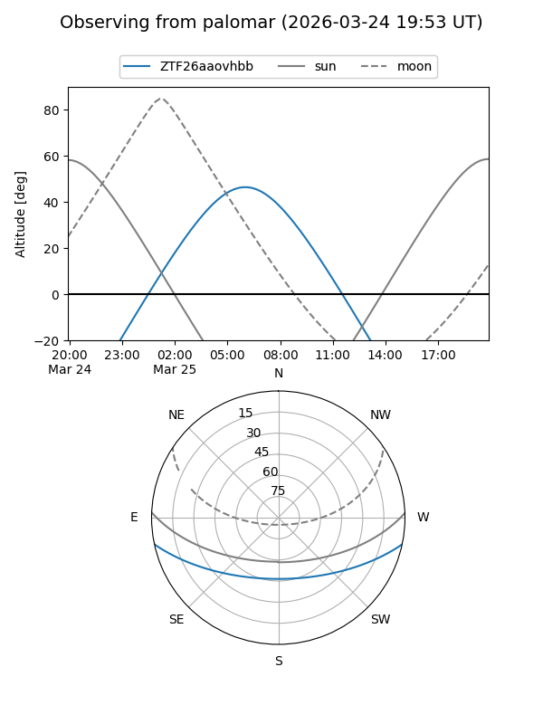

ZTF26aaovhbb
Target ZTF26aaovhbb at 2026-03-25 08:17
Aliases and brokers:
FINK: link
Lasair: link
ALeRCE: link
alt names
ZTF26aaovhbb (ztf,fink_ztf)
Coordinates:
equatorial (ra, dec) = 155.6835,-10.01986
equatorial (HMS+DMS) = 10:22:44.05,-10:01:11.51
galactic (l, b) = (253.6765,+38.24137)
Flags:
Photometry:
last ztfg=17.12
1 ztfg detections
Lightcurve

Visibility


Additional plots